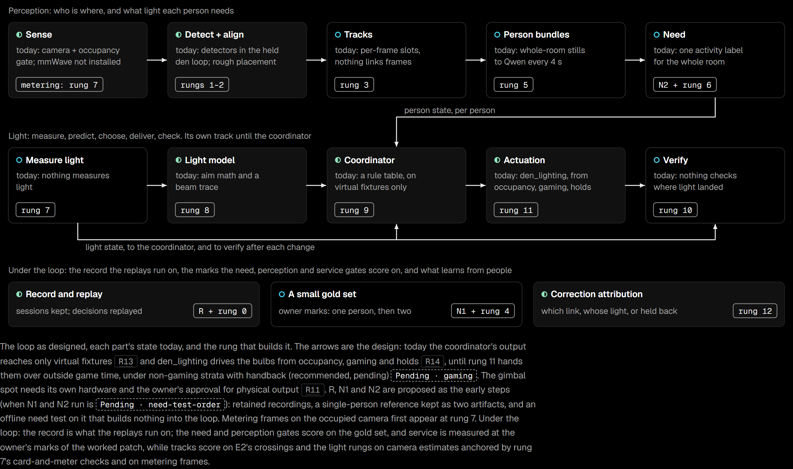

The perception and decision loop.
How the system is meant to see a room, decide on light for each person, check the result and learn, and how much of that runs today. Every part on this page carries one of three marks, and nothing here is promised beyond its mark.
- Works todayruns in the den now
- Partly builtsome of it exists
- Not built yetdesigned only
Running today
Works today
The den's lights are four Hue bulbs run by den_lighting, a Home Assistant integration. They switch on when someone is in the room and off 120 seconds after it empties, dim to a warm, low scene while a Steam game runs, and hold any bulb someone changes by hand.
A camera and its “is anyone here?” check also run in the den. Everything else on this page is partly built or not built yet.
No engineered spotlight is installed. The moving spotlight and its fixture are still bench and board work: see Hardware.
Development of the den, the Qwen vision model and the backend has been paused since 25 October 2026.
- Home apphooterjackson/HomeAppSelf-hosted chat client for Home Assistant: local LLM, tool calls and device actions, voice, live GPU and model metrics.Public
- Lovelace cardhooterjackson/engineered-lighting-cardCustom Home Assistant card: camera feeds, world-model overlays, Jetson and LattePanda metrics.Public
- Gimbal benchhooterjackson/gimbal-benchBench and commissioning console for the robotic spotlight: ESP32-C6 firmware, RMD-L-5005 CAN tooling, local control UI.Private
- Engineering notebookhooterjackson/engineered-lighting-siteSource for engineering.engineered.lighting: runbooks, the PCB chapter and this site.Public
How it works
The loop watches the room, works out what light each person needs, gives each of them that light, checks the result and learns. Then the camera sees the room in its new light, and it goes round again. It is being built in a den in Victoria.
-
01
See the room
A camera watches the room. The rest of the system stays asleep until someone walks in.
Works todayThe camera and its “is anyone here?” check run in the den.
-
02
Spot people and things
It finds each person’s body and hands, and things like a knife or a book.
Partly builtThe software exists and has been tried out in the den, but is switched off for now.
-
03
Follow each person
It marks where each person is on a map of the room and keeps track of each one separately. No names needed: people are A and B.
Partly builtIt can roughly place one person, in the same switched-off software. Keeping people apart is still to come.
-
04
Understand what each needs
It works out what light each person needs: bright and focused for chopping, soft and steady for reading.
Partly builtAn AI describes the whole room every few seconds. Working out each person’s needs is still to come.
-
05
Plan the light
It turns those needs into one plan that also looks good, worked out around any light set by hand, and tries it on a 3D copy of the room before changing a real light.
Partly builtSimple fixed rules, tried only on pretend lights on a screen.
-
06
Change the lights
It tells the lights what to do, changing them gently. A light someone changed is never changed back by an old plan, and the others carry on.
Partly builtFour ordinary smart bulbs in the den switch on and off with the room, dim warm while a game runs, and hold a bulb someone changed. The planned spotlights exist only on screen.
-
07
Check the result
It looks again: did the light land on the surfaces where it should? If not, it adjusts. Glare in someone’s eyes is predicted, not measured.
Not built yetNothing checks the result yet.
-
08
Learn from you
When someone turns a light up or down, it keeps planning around that setting and learns what they like for next time.
Partly builtThe bulbs notice a change by hand and hold that bulb until two minutes after the room empties or it was last touched, whichever is later, or during a game until the game ends. Learning from it is still to come.
Back to step 1: the camera sees the room in its new light.
- Two people, two lights: the goal. A bright pool for one person and a soft glow for the other, at the same time. Today, two or more people in the den get ordinary room light.
- No names needed. It is designed to tell people apart as anonymous A and B, without knowing who anyone is. Naming someone would be their choice.
The build ladder
Each rung builds one part into today's loop, behind a gate written before the rung starts. The numbers in the gates are targets set before the work, not measured results.
- RRecording capabilityNot built yetKeep single-person den sessions with checked capture timing, cutting any stretch with a second person in view. Waits on the owner's decision about what may be kept.
- 0Record and replayPartly builtKeep what today's loop writes, and replay every logged decision to the same scene.
- N1A single-person referenceNot built yetA labelled reference for one person, labelled blind to a protocol fixed before labelling starts.
- N2Need on one person, offlineNot built yetAn offline verdict, feasible, not feasible or insufficient, on whether one person's need can be read. Changes nothing in the loop.
- 1Camera registrationPartly builtTie the camera to the room scan: three control pairs and two checks, all within 5 cm.
- 2Observations in the room framePartly builtEvery observation carries its time, room position, uncertainty and freshness.
- 3Tracks, from geometryNot built yetFollow each person with no silent identity swaps.
- 4A two-person gold setNot built yetLabelled two-person evenings to test the tracks against.
- 5Person bundlesNot built yetEach person's evidence gathered in one place, and marked unsafe whenever two people cross.
- 6Person needNot built yetEach person's working area and need: area within 15 cm median, onset within 3 s median.
- 7Measure lightNot built yetMeasure the room's light with a calibrated camera, checked against a light meter.
- 8Light modelPartly builtPredict the light a scene makes: median error 8%, 90th percentile 19%.
- 9Coordinator v0Partly builtOne plan for the room, replayed against real evenings, each decision in under 100 ms.
- 10VerifyNot built yetCheck the light landed: within ±15%, on at least 85% of attempts.
- 11Hand the bulbs to the coordinatorPartly builtOnly if it needs fewer corrections by hand per occupied hour than today's
den_lighting. - 12Correction attributionPartly builtWhen someone corrects a light, work out which part of the loop got it wrong.

What's next
The sofa look test
The proposed next step is an offline test with one question: can today's den camera and Qwen prompt tell reading a paper book apart from using a phone, holding a closed book, or resting on the sofa? It runs on staged recordings, changes no lights, and waits on none of the open decisions. The test is now written, on a branch that is not merged yet, and it has not been run, so there is no answer yet.
29 decisions are pending
The architecture lists 29 policy decisions for the owner, from how long a hand-set light is held to what recordings may be kept. None has been applied: the owner answered ten in a first pass and parked the rest, and the drawings still show all 29 as pending, so nothing that depends on one can start.
Every part
The architecture is drawn on fourteen sheets. They contain camera frames from the owner's apartment (faces blurred, AI-edited pictures tagged), so they are not published yet.
- A1One closed loop between people and light
- A2What runs each part, on which machine, how fast
- A3Seventeen records carry everything between stages
- A4Forty seconds in the den, through every component and into every record
- A5From pixels to one track per person, with the doubt kept
- A6Today one Qwen call describes the whole room; the proposal reads each person
- A7Each person is a handful of need variables
- A8Qwen teaches a small per-person student
- A9Measure the light, predict it, choose by objective, then check what landed
- A10Beauty is authored once, in perceptual terms, and solved for in every room
- A11A correction says the light was wrong; the logged decision says which link broke
- A12The owner sets the room's numbers by hand today
- A13Score the light people live with, then find the link that failed
- A14Eight problems, what each costs, and the order to build